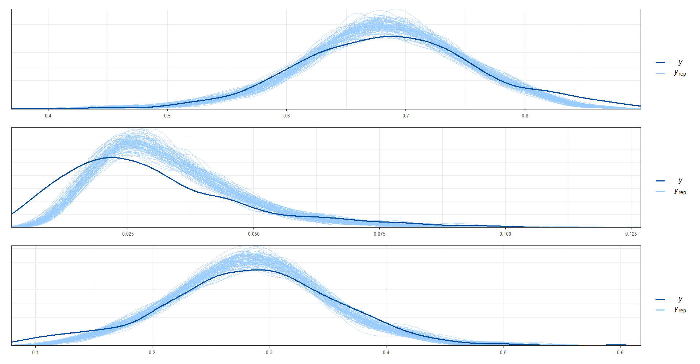

9.4 Validación del modelo
La validación de un modelo es esencial para evaluar su capacidad para predecir de manera precisa y confiable los resultados futuros. En el caso de un modelo de área con respuesta multinomial, la validación se enfoca en medir la precisión del modelo para predecir las diferentes categorías de respuesta. El objetivo principal de la validación es determinar si el modelo es capaz de generalizar bien a datos no vistos y proporcionar predicciones precisas. Esto implica comparar las predicciones del modelo con los datos observados y utilizar métricas de evaluación para medir el rendimiento del modelo. La validación del modelo es esencial para garantizar la calidad de las predicciones y la confiabilidad del modelo para su uso en aplicaciones futuras.
library(posterior)
infile <- paste0("01 Modelo de area/PER/2017/Data/fit_rtanmultinomial_con_covariable_satelite.Rds")
fit <- readRDS(infile)
theta_dir <- indicador_dam1 %>%
transmute(dam2,
n = n_desocupado + n_ocupado + n_inactivo,
Ocupado, Desocupado, Inactivo)
color_scheme_set("brightblue")
theme_set(theme_bw(base_size = 15))
y_pred_B <- as.array(fit, pars = "theta") %>%
as_draws_matrix()
rowsrandom <- sample(nrow(y_pred_B), 100)
theta_1<- grep(pattern = "1]",x = colnames(y_pred_B),value = TRUE)
theta_2<- grep(pattern = "2]",x = colnames(y_pred_B),value = TRUE)
theta_3<- grep(pattern = "3]",x = colnames(y_pred_B),value = TRUE)
y_pred1 <- y_pred_B[rowsrandom,theta_1 ]
y_pred2 <- y_pred_B[rowsrandom,theta_2 ]
y_pred3 <- y_pred_B[rowsrandom,theta_3 ]
ppc_dens_overlay(y = as.numeric(theta_dir$Ocupado), y_pred1)/
ppc_dens_overlay(y = as.numeric(theta_dir$Desocupado), y_pred2)/
ppc_dens_overlay(y = as.numeric(theta_dir$Inactivo), y_pred3)
La matriz de correlación de los efectos aleatorios.
omega <- summary(fit,"Omega")$summary
tba(omega)| mean | se_mean | sd | 2.5% | 25% | 50% | 75% | 97.5% | n_eff | Rhat | |
|---|---|---|---|---|---|---|---|---|---|---|
| Omega[1,1] | 1.0000 | NaN | 0.0000 | 1.0000 | 1.0000 | 1.0000 | 1.0000 | 1.000 | NaN | NaN |
| Omega[1,2] | 0.2072 | 0.0024 | 0.0762 | 0.0594 | 0.1554 | 0.2077 | 0.2602 | 0.355 | 996.1386 | 1.0007 |
| Omega[2,1] | 0.2072 | 0.0024 | 0.0762 | 0.0594 | 0.1554 | 0.2077 | 0.2602 | 0.355 | 996.1386 | 1.0007 |
| Omega[2,2] | 1.0000 | 0.0000 | 0.0000 | 1.0000 | 1.0000 | 1.0000 | 1.0000 | 1.000 | 7672.2241 | 0.9995 |
9.4.1 Estimación de los parámetros.
El código crea dos matrices, theta_obs_ordenado y theta_pred_ordenado, que contienen las estimaciones medias de los parámetros del modelo de respuesta multinomial con covariables para los datos de observación y predicción, respectivamente. La función matrix() se utiliza para dar formato a los datos con una matriz nrow x ncol, y se asignan nombres de columna apropiados a la matriz resultante utilizando colnames(). Luego se convierten las matrices en marcos de datos (as.data.frame()) y se unen mediante full_join() para crear una única tabla que contenga todas las estimaciones de los parámetros para los datos de observación y predicción, junto con la información del indicador de área (theta_dir). El resultado final es un marco de datos llamado estimaciones_obs.
dam_pred <- readRDS("01 Modelo de area/PER/2017/Data/dam_pred.rds")
P <- 3
D <- nrow(indicador_dam1)
D1 <- nrow(dam_pred)
## Estimación del modelo.
theta_obs <- summary(fit, pars = "theta")$summary[, "mean"]
theta_pred <- summary(fit, pars = "theta_pred")$summary[, "mean"]
## Ordenando la matrix de theta
theta_obs_ordenado <- matrix(theta_obs,
nrow = D,
ncol = P,byrow = TRUE)
colnames(theta_obs_ordenado) <- c("Ocupado_mod", "Desocupado_mod", "Inactivo_mod")
theta_obs_ordenado%<>% as.data.frame()
theta_obs_ordenado <- cbind(dam2 = indicador_dam1$dam2,
theta_obs_ordenado)
theta_pred_ordenado <- matrix(theta_pred,
nrow = D1,
ncol = P,byrow = TRUE)
colnames(theta_pred_ordenado) <- c("Ocupado_mod", "Desocupado_mod", "Inactivo_mod")
theta_pred_ordenado%<>% as.data.frame()
theta_pred_ordenado <- cbind(dam2 = dam_pred$dam2, theta_pred_ordenado)9.4.1.1 Estimación del desviación estárdar y el coeficiente de valiación
Este bloque de código corresponde al cálculo de las desviaciones estándar (sd) y coeficientes de variación (cv) de los parámetros theta para los datos observados y predichos. En primer lugar, se utiliza la función summary() del paquete rstan para extraer los valores de sd de los parámetros theta observados y predichos, respectivamente, a partir del modelo (fit) que contiene la información de la estimación de los parámetros de la distribución Bayesiana. Luego, se organizan los valores de sd en una matriz ordenada por dam2 y se les asignan los nombres correspondientes. Con esta matriz, se calcula otra matriz que contiene los coeficientes de variación para los parámetros theta observados (theta_obs_ordenado_cv). De manera similar, se construyen matrices ordenadas por dam2 para los valores de sd y cv de los parámetros theta predichos (theta_pred_ordenado_sd y theta_pred_ordenado_cv, respectivamente).
theta_obs_sd <- summary(fit, pars = "theta")$summary[, "sd"]
theta_pred_sd <- summary(fit, pars = "theta_pred")$summary[, "sd"]
theta_obs_ordenado_sd <- matrix(theta_obs_sd,
nrow = D,
ncol = P,byrow = TRUE)
colnames(theta_obs_ordenado_sd) <- c("Ocupado_mod_sd", "Desocupado_mod_sd", "Inactivo_mod_sd")
theta_obs_ordenado_sd%<>% as.data.frame()
theta_obs_ordenado_sd <- cbind(dam2 = indicador_dam1$dam2,
theta_obs_ordenado_sd)
theta_obs_ordenado_cv <- theta_obs_ordenado_sd[,-1]/theta_obs_ordenado[,-1]
colnames(theta_obs_ordenado_cv) <- c("Ocupado_mod_cv", "Desocupado_mod_cv", "Inactivo_mod_cv")
theta_obs_ordenado_cv <- cbind(dam2 = indicador_dam1$dam2,
theta_obs_ordenado_cv)
theta_pred_ordenado_sd <- matrix(theta_pred_sd,
nrow = D1,
ncol = P,byrow = TRUE)
colnames(theta_pred_ordenado_sd) <- c("Ocupado_mod_sd", "Desocupado_mod_sd", "Inactivo_mod_sd")
theta_pred_ordenado_sd%<>% as.data.frame()
theta_pred_ordenado_sd <- cbind(dam2 = dam_pred$dam2, theta_pred_ordenado_sd)
theta_pred_ordenado_cv <- theta_pred_ordenado_sd[,-1]/theta_pred_ordenado[,-1]
colnames(theta_pred_ordenado_cv) <- c("Ocupado_mod_cv", "Desocupado_mod_cv", "Inactivo_mod_cv")
theta_pred_ordenado_cv <- cbind(dam2 = dam_pred$dam2, theta_pred_ordenado_cv)El último paso es realizar la consolidación de la bases obtenidas para la estimación puntual, desviación estándar y coeficiente de variación.
theta_obs_ordenado <- full_join(theta_obs_ordenado,theta_obs_ordenado_sd) %>%
full_join(theta_obs_ordenado_cv)
theta_pred_ordenado <- full_join(theta_pred_ordenado,theta_pred_ordenado_sd) %>%
full_join(theta_pred_ordenado_cv)
estimaciones <- full_join(indicador_dam1,
bind_rows(theta_obs_ordenado, theta_pred_ordenado))
saveRDS(object = estimaciones, file = "Rmd/PER/Recursos/estimaciones.rds")
tba(head(estimaciones,10))| dam2 | n_upm | n_ocupado | n_desocupado | n_inactivo | Ocupado | Ocupado_se | Ocupado_var | Ocupado_deff | Desocupado | Desocupado_se | Desocupado_var | Desocupado_deff | Inactivo | Inactivo_se | Inactivo_var | Inactivo_deff | id_orden | Ocupado_mod | Desocupado_mod | Inactivo_mod | Ocupado_mod_sd | Desocupado_mod_sd | Inactivo_mod_sd | Ocupado_mod_cv | Desocupado_mod_cv | Inactivo_mod_cv |
|---|---|---|---|---|---|---|---|---|---|---|---|---|---|---|---|---|---|---|---|---|---|---|---|---|---|---|
| 010101 | 27 | 288 | 12 | 125 | 0.6764 | 0.0162 | 0.0003 | 0.5156 | 0.0278 | 0.0073 | 0.0001 | 0.8500 | 0.2958 | 0.0171 | 0.0003 | 0.6013 | 1 | 0.6753 | 0.0288 | 0.2959 | 0.0161 | 0.0053 | 0.0157 | 0.0238 | 0.1854 | 0.0532 |
| 010201 | 11 | 127 | 2 | 56 | 0.6937 | 0.0296 | 0.0009 | 0.7620 | 0.0135 | 0.0131 | 0.0002 | 2.3718 | 0.2927 | 0.0372 | 0.0014 | 1.2349 | 2 | 0.6919 | 0.0243 | 0.2838 | 0.0276 | 0.0073 | 0.0273 | 0.0398 | 0.3016 | 0.0960 |
| 010206 | 3 | 48 | 1 | 5 | 0.8633 | 0.0240 | 0.0006 | 0.2598 | 0.0255 | 0.0163 | 0.0003 | 0.5680 | 0.1112 | 0.0224 | 0.0005 | 0.2709 | 3 | 0.8246 | 0.0303 | 0.1451 | 0.0220 | 0.0087 | 0.0202 | 0.0267 | 0.2860 | 0.1392 |
| 010307 | 3 | 37 | 2 | 12 | 0.7049 | 0.0359 | 0.0013 | 0.3112 | 0.0563 | 0.0330 | 0.0011 | 1.0334 | 0.2388 | 0.0645 | 0.0042 | 1.1492 | 4 | 0.7050 | 0.0470 | 0.2479 | 0.0325 | 0.0135 | 0.0312 | 0.0462 | 0.2873 | 0.1257 |
| 010401 | 9 | 128 | 1 | 40 | 0.7427 | 0.0510 | 0.0026 | 2.3145 | 0.0083 | 0.0074 | 0.0001 | 1.1294 | 0.2490 | 0.0495 | 0.0024 | 2.2222 | 5 | 0.7261 | 0.0219 | 0.2520 | 0.0387 | 0.0082 | 0.0381 | 0.0533 | 0.3739 | 0.1510 |
| 010403 | 5 | 90 | 1 | 22 | 0.8156 | 0.0338 | 0.0011 | 0.8589 | 0.0075 | 0.0071 | 0.0001 | 0.7671 | 0.1769 | 0.0342 | 0.0012 | 0.9096 | 6 | 0.7785 | 0.0183 | 0.2031 | 0.0288 | 0.0066 | 0.0282 | 0.0370 | 0.3607 | 0.1386 |
| 010513 | 2 | 31 | 1 | 12 | 0.7045 | 0.0390 | 0.0015 | 0.3188 | 0.0227 | 0.0155 | 0.0002 | 0.4690 | 0.2727 | 0.0235 | 0.0006 | 0.1220 | 7 | 0.7021 | 0.0291 | 0.2688 | 0.0275 | 0.0087 | 0.0270 | 0.0391 | 0.2987 | 0.1005 |
| 010701 | 23 | 256 | 8 | 67 | 0.7596 | 0.0271 | 0.0007 | 1.3373 | 0.0259 | 0.0101 | 0.0001 | 1.3487 | 0.2145 | 0.0272 | 0.0007 | 1.4655 | 8 | 0.7491 | 0.0303 | 0.2206 | 0.0243 | 0.0081 | 0.0234 | 0.0325 | 0.2680 | 0.1061 |
| 010706 | 5 | 73 | 2 | 20 | 0.7396 | 0.0439 | 0.0019 | 0.9520 | 0.0353 | 0.0292 | 0.0009 | 2.3771 | 0.2251 | 0.0196 | 0.0004 | 0.2104 | 9 | 0.7369 | 0.0329 | 0.2301 | 0.0280 | 0.0094 | 0.0267 | 0.0381 | 0.2868 | 0.1162 |
| 020101 | 14 | 168 | 6 | 80 | 0.6749 | 0.0277 | 0.0008 | 0.8879 | 0.0266 | 0.0089 | 0.0001 | 0.7734 | 0.2984 | 0.0289 | 0.0008 | 1.0127 | 10 | 0.6711 | 0.0299 | 0.2990 | 0.0261 | 0.0079 | 0.0255 | 0.0389 | 0.2630 | 0.0854 |